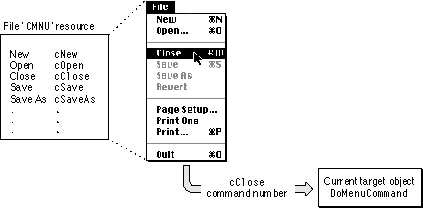

Legacy Document
Important: The information in this document is obsolete and should not be used for new development.
Important: The information in this document is obsolete and should not be used for new development.


The Division of Labor Between Your Code and MacApp
A MacApp application contains code and resources from the MacApp class library, as well as code and resources supplied by the developer. An application also contains a mix of objects that are normally instantiated from unmodified MacApp classes, such as the Clipboard Manager object, and objects instantiated from subclasses you define based on MacApp classes. For some subclasses you define, you may need to add very little code to the MacApp parent class, while for others you may write a great deal of additional code.MacApp supplies code to receive and dispatch events. It handles some events and passes others on to your code. Sometimes MacApp can do part of the job but depends on your code to do the rest.
As a rule, MacApp handles things that are predictable, or things that operate in the same way for most applications. MacApp often knows when something must be done, but not how. When that happens, MacApp calls a specific method, which your application must override to perform the required action.
For example, when the user chooses New from the File menu, MacApp calls the application object's
DoMakeDocumentmethod to create a new document. But it's up to you to define a subclass ofTApplication, override theDoMakeDocumentmethod, and provide code to create the specific kind of document your application needs.The following sections describe the key functions in a MacApp application and provide examples of how responsibility is shared between your code and MacApp.
Managing Menus
You create resource definitions to tell MacApp about your application's menus. The information you supply specifies which menus to show in the menu bar for your application, which items to list in the menus, which items have keyboard equivalents, and the initial state of the menu items (enabled, checked, and so forth). MacApp supplies several default'CMNU'resource definitions, including definitions for the Apple, File, Edit, Edit with Edition Manager support, and Mail menus. MacApp also supplies an'MBAR'resource definition that specifies the Apple, File, and Edit menus. You can use these definitions in their default form or modify them for your application.MacApp automatically displays the menus you have defined and highlights choices when a user opens a menu.
For more information on using menu resources in your application, see "Working With Menu Resources" on page 300.
Processing Menu Commands
When a user chooses a menu item, MacApp maps the choice into aDoMenuCommandmethod call to the current target object, passing the command number for the chosen menu command, as shown in Figure 1-6.Figure 1-6 MacApp responds to a user menu choice

The
'CMNU'resource for the File menu specifies the commands that appear in the menu and associates a command constant with each menu command. For the Close menu command, for example, the constant iscClose.One of your application's command-handling objects responds to the menu choice by performing an action or creating a command object to perform an action. This process is described in more detail in Chapter 5, "Events and Commands."
For certain menu commands, MacApp creates command objects to handle the command operation, but your classes may need to provide some code as well. For example, your document class may need to supply its own
Closemethod and destructor routine, which will then be called when a document window is closed.Since MacApp cannot anticipate the commands that are unique to your application, you define command classes to handle application-specific operations. MacApp knows when to call the
Do,Undo,Redo, and other methods of your command objects.Processing Mouse Clicks
When the user clicks the mouse, the application object dispatches the event according to where it occurs. A mouse click in an application menu bar is converted to a menu command and processed accordingly. A mouse click in an application window is dispatched to the window in which it occurs. MacApp's window class does most of the work of handling a mouse click in the window's control area, while your view objects handle mouse clicks in the content area.Processing of mouse clicks is described in greater detail in Chapter 5, "Events and Commands."
Processing Keystrokes
When the user presses a key, MacApp's application object dispatches the keystroke to the target chain. A keystroke can be handled by any target-chain object that is interested in it. Command-key combinations with menu equivalents are dispatched in the same manner as menu commands. Handling keystrokes in your application is described in Chapter 20, "Working With the Keyboard."MacApp provides several view classes that accept and validate text and numeric data entry. For more information on these views, see Chapter 8, "Displaying, Manipulating, and Printing Data."
Managing Windows
MacApp handles window activation and updating, but your views draw the window's content area. When the user manipulates the title bar, size box, close box, or zoom box in a standard window, MacApp responds--your code responds to actions in the content area. MacApp provides a default About box and manages application switching. For information on using windows in your application, see Chapter 18, "Working With Windows."Reading and Writing Documents
MacApp provides a framework for saving file-based documents and making sure sufficient disk space is available. You define data structures for your document's data and implement read and write methods. MacApp calls your methods when the user opens or saves a document.MacApp's
TFileandTFileHandlerclasses work together with theTFileBasedDocumentclass to provide low-level File Manager support for reading and writing data. Other document classes support publish and subscribe. For more information on documents, see Chapter 7, "Document Handling."Supporting PowerTalk Mailers
MacApp's PowerTalk support enables a user to add a mailer to a document's view and to then treat the document as an electronic letter.MacApp supplies a
'CMNU'resource for the Mail menu, plus various classes to provide an interface to the Standard Mail Package. MacApp responds to mail commands and displays a mailer view in your document. You read native content when a letter is opened and write it when the letter is closed.MacApp provides much of its PowerTalk support through two mixin classes,
MMailingandMMailable. TheTMailingApplicationclass mixes inMMailing, and theTMailDocumentclass mixes inMMailable. Your application uses these classes, together withTMailerView,TMailer, andTLetter, to support mailable documents. For more information, see "PowerTalk Mailers," beginning on page 192.Supporting Scripting
MacApp receives and dispatches Apple events and knows how to handle the four required Apple events: Open Application, Open Documents, Print Documents, and Quit Application.You add a mixin class (or multiple inheritance class) to an existing class definition to add scripting capabilities. MacApp provides the mixin classes
MScriptableObjectandMDefaultScriptableObjectfor this purpose. MacApp classes such asTDocumentandTWindowalready useMScriptableObjectand are capable of responding to Apple event requests such as Move, Open, and Close. TheTApplicationclass mixes inMDefaultScriptableObjectand serves as the default target for Apple events that don't specify a target object.MacApp provides other facilities to add a broad range of scripting capabilities to your application, but you decide just how much scripting support to add. For more information, see Chapter 6, "Scripting."
Printing
To print the contents of a document's views, your document class collaborates with theTStdPrintHandlerclass. Anything you can display in a view can be printed. MacApp calls on your view to draw but redirects the output to the printer.You enable MacApp's standard multipage printing capabilities by linking in the print module and writing some additional code. To add printing features such as drawing borders around the text or placing headings on every page, you extend MacApp's standard printing by overriding methods of the standard print handler class.
Simple printing of view contents is straightforward, but more complicated print requirements may require significant effort. For more information on printing, see Chapter 8, "Displaying, Manipulating, and Printing Data."
Supporting Clipboard Operations
MacApp's basic Clipboard support displays the Edit menu, shows a Clipboard view that can display'TEXT'and'PICT'data types, and calls methods of the application to interact with the Macintosh desk scrap when the application is switched in or out.Your application builds on MacApp's hooks to support Clipboard operations on your own data types. Clipboard support is described in "The Clipboard," beginning on page 129, and in Chapter 22, "Working With the Clipboard."
Supporting Drag and Drop
During drag and drop operations, MacApp's globalgDragDropSessionobject manages communication with the Drag Manager. A view that supports dragging or dropping registers with its window, and the window registers with the global drag session object. The drag session object calls your views and windows at various times during a drag. MacApp supplies a behavior class to simplify turning on drag and drop capabilities for your view classes.Draggable views supply data to be dragged and an outline for the dragged data; they also create command objects to supply the dragged data. Droppable views supply visual feedback to show they can accept a drop and where the dropped data will be inserted; they also create commands to insert the dropped data. MacApp's drag and drop support is described in detail in Chapter 9, "Drag and Drop."
Managing Idling
MacApp provides a mechanism to parcel out idle time when the application isn't busy. The application distributes idle time to the Standard Mail Package
(if the application uses it), to an attached script, to all command-handler objects and behaviors in the target chain, and to all command-handler objects and behaviors in a special chain called the cohandler chain.MacApp's idle-time processing is described in Chapter 5, "Events and Commands."